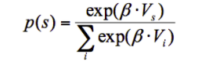

La Función Softmax es una de las funciones mejor conocidas en ciencia e ingenieria, por lo que ha sido ampliamente utilizada en campos como teoría de juegos, aprendizaje por refuerzo y aprendizaje de máquinas(Gao & Pavel, 2018).
En el caso específico de aprendizaje por refuerzo, la función softmax nos permite estimar
la probabilidad de elegir una opción sobre otra, dejándonos entrever los comportamientos de exploración y explotación
especialmente por el valor que el parámetro de temperatura inversa β adquiere.
El parámetro β controla el nível de estocasidad en la elección, por lo tanto, este parámetro
puede adquirir valores desde 0 hasta ∞ donde valores cercanos a 0 = elecciones al azar o explorar y valores cercanos a
∞ =elegir la opción con el valor más alto o explotar (O'Reilly & den Ouden, 2015).
Como un ejemplo motivante, considera el caso de decidir entre dos opciones A y B,donde la probabilidad de elegir la opción A está dada por:

Donde
Como podrás ver en la gráfica, la probabilidad de elegir el estímulo A incrementa con la diferencia de Vi(utilidad B-A).
Por lo anterior, es correcto decir que el sujeto elige A la mayoría del tiempo cuando VA> VB (pero no siempre).
De aquí el término Softmax, ya que el sujeto elige el estímulo con el máximo valor la mayoría del tiempo,
por lo que es una función de maximización 'suave' (soft).
Aunque existen otros algoritmos que pueden dar cuenta de los mecanismos de elección, el uso de la regla de desición softmax
está favorablemente sustentada por la literatura experimental, concluyedo que es un modelo plausible para modelar la toma de decisiones
de la vida real.